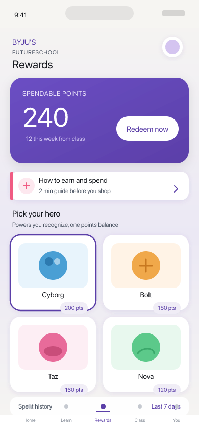
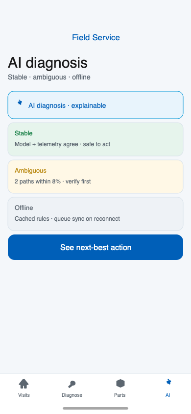

Work
Research that ships. Design that scales.
Nine years from edtech at scale to Fortune 100 healthcare — leading teams, systems, and 0→1 products.
I started in classrooms and fellowship programs—explaining ideas until they land. That habit carried me to BYJU’s Future School at global edtech scale (eight countries, research with kids at volume), and into Fortune 100 healthcare delivery with Stryker and HP—where a confused screen has real consequences. Below are three projects that show the same bar: clarity first, evidence in the room, recommendations you can ship. Client names are anonymized where required.

Foundational UX · K-8
How do we make earn-and-spend legible before scaling the rewards marketplace?
Earn-and-spend wasn’t legible while marketplace UI was scaling. I ran moderated sessions on production-aligned screens and staged ship: one ledger and onboarding before the shop.
→
How do we help field technicians act faster with AI they can trust?
Technicians stalled between AI diagnosis and parts order on the truck. We redesigned the handoff so the next step was obvious, explained, and overrideable when the model was wrong.
→
How do field reps run robotic surgery logistics inside the hospital?
Reps juggled orders, serials, delivery, use, and returns across calls and spreadsheets. One mobile thread now runs the visit—preferences through auditable close.
→